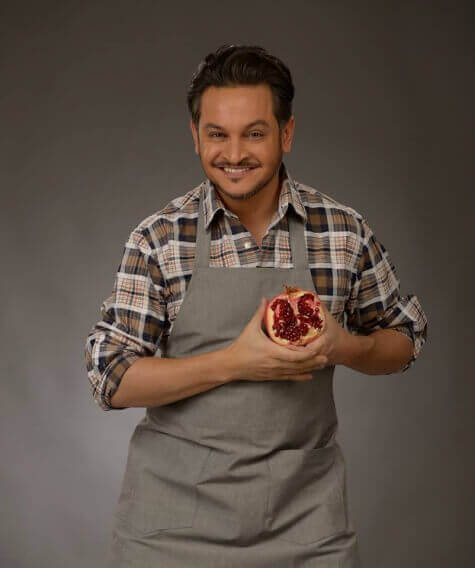

Эктор Хименес-Браво - канадский и украинский шеф-повар колумбийского происхождения, бизнесмен, телеведущий. По признанию самого повара, интерес к кулинарии ему привила мать. Причем его интересовала не просто сама процедура обработки продуктов, но и её эстетическая сторона. Кулинарная концепция Эктора построена на идеях мультикуль-турализма и интеграции самых разнообразных методов приготовления пищи. Эктор Браво — создатель собственного кулинарного стиля «Nuevo Latino». Онинарные традиции,французскую изысканность и деликатность азиатской кухни. Основу блюд составляют мясо, рыба и морепродукты.
Эктор Хименес-Браво возглавляет международную компанию Bravo Restaurant Group, занимающуюся консалтингом. Под руководством компании были открыты десятки ресторанов в Киеве, Монреале, Оттаве, Гонконге и других городах. В ноябре 2013 открыл кулинарную академию Hector J. Bravo Culinary & Pastry Academy. В мае 2016 года была открыта онлайн Академия кулинарного и кондитерского искусства Эктора Хименес-Браво. В 2016 году Браво открыл ресторан современной китайской кухни BAO.
